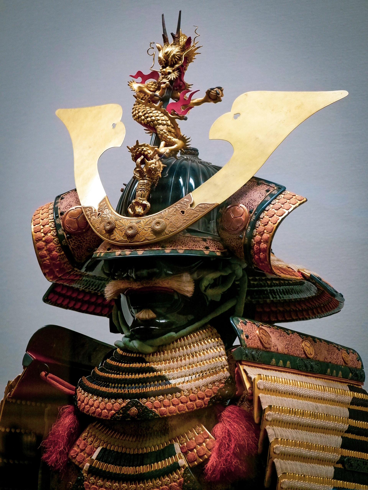
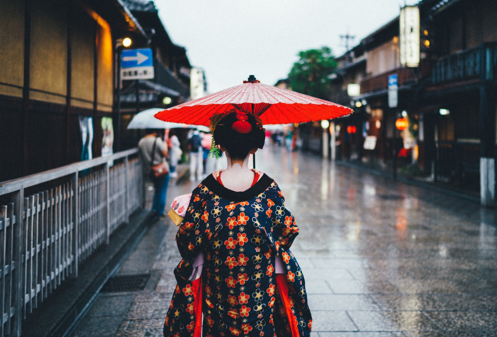
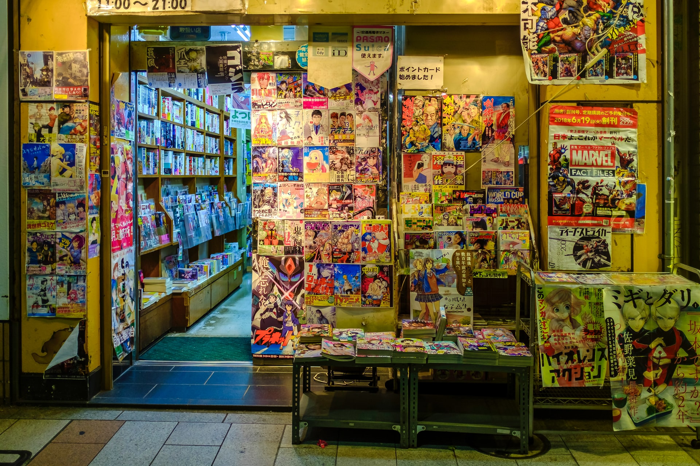
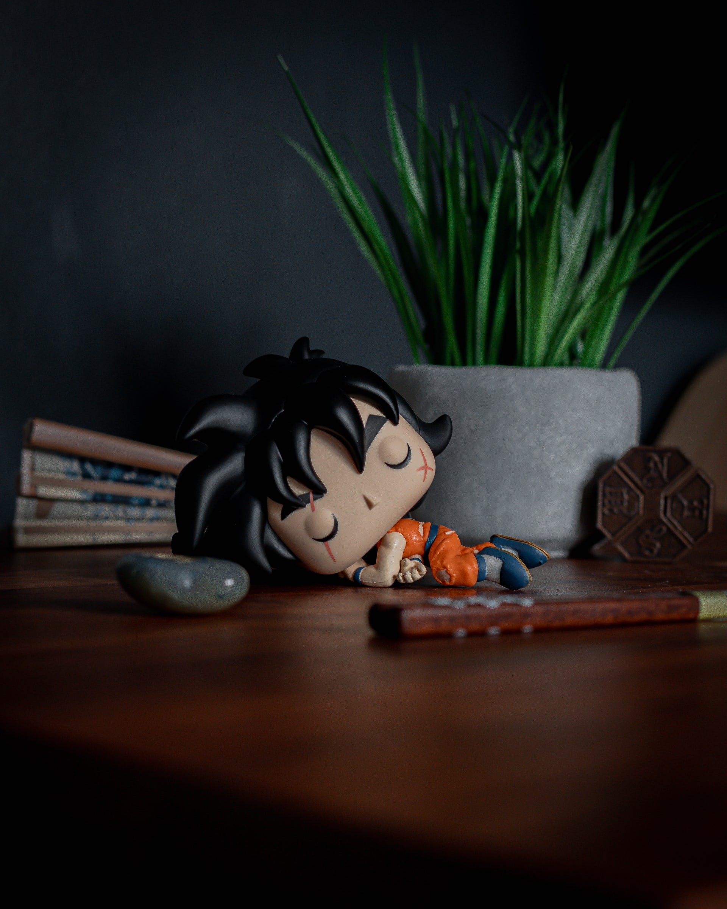

Although samurai no longer exist, the influence of these great warriors still manifests itself deeply in Japanese culture and samurai heritage can be seen all over Japan - be it a great castle, a carefully planned garden, or beautifully preserved samurai residences. It is also deeply ingrained in the psyche of the Japanese people.
The basis of samurai conduct is bushido, "the way of the warrior". This unique philosophy valued honour, reckless bravery and selflessness, as well as duty to the warrior's master with the purpose of giving up one's life and embracing death. There was no place for fear in the way of the warrior and this conduct of self discipline and respectful, ethical behaviour was to become the role model behaviour for other classes throughout Japan's history.
Samurai ideals have transcended throughout Japanese history and understanding the samurai heritage provides an interesting insight into today's modern society and the respect, discipline and honour that is prevalent throughout this unique nation and that the rest of the world admires.
Japan is proud of its warriors of the past and the way of the warrior can be found all over this beautiful country, be it visiting one the great castles that bore witness to many a bloody battle, experiencing a festival with its origins in samurai culture, visiting the grounds of great samurai battles in history or a pilgrimage to the small cave where Musashi wrote The Book of Five Rings.
The distinctive white face, red lips and elaborately decorated hairstyle of the Geisha is an enduring image portrayed throughout the globe as the entrance to a world to which most of us mere mortals are not invited. From somewhat seedy beginnings, the current world of the geisha remains a mystery to most foreigners and Japanese alike.
Like most nations, Japan has always had some manner of pleasure quarter offering various forms of entertainment. As Japan cut off all contact with the outside world during the Edo era, the rich merchants of the cities continued to develop the arts of the country in the major urban areas.
With the many courtesans of the time providing one area of fulfilment, the merchants looked for other types of entertainment, including music, dance and poetry. From these early stages, the world of the geisha developed, providing a service to entertain and charm, working alongside the very desirable, and for most people unobtainable, courtesan.
The image of Japan is one constantly pushing forward into the future, and whilst some may say the geisha world is outmoded and losing its dignity, the links to the past and tradition in Japan are astoundingly enduring. As long as Japan continues to hold its rich and respected culture paramount, the world of the geisha as we know it will continue to survive.
Once almost completely unknown to the world outside Japan, manga (Japanese comics) and anime (Japanese animation) have become a global phenomenon - and their popularity is growing every day.
Manga books are generally printed in black and white and cover a wide variety of genres and subject matter aimed at both sexes and all ages, not just for young boys - to whom comics are generally marketed in the West.
Themes include romance, action adventure, science fiction, comedy, sports and can also venture into darker subject matter for adults such as horror and more risqué material, though the latter tends not to be acknowledged in everyday life and culture.
Once certain manga have proven their worth by popularity, the natural progression is for an animated TV series to be created, however, manga is not the only source of inspiration for anime. For example, Pokémon was a worldwide hit as a video game for Nintendo before it was made into manga and anime series.
Origami is increasingly recognized as an effective way to practice mindfulness and increase well-being. It has a meditative quality. It's slow and precise, each fold carefully made. It takes patience and a sincere focus to follow the steps and gradually bring the model to life. And it has been shown that origami can help with relaxation, concentration, hand-eye coordination and memory.
For paper folding only one material is required: paper. And paper is fragile which means that sadly no ancient origami models folded by Emperors of old exist to prove its heritage. It has often been assumed that China, where in 105 A.D. Cai Lun (also written Ts'ai Lun) is credited with the invention of paper, must have been the birthplace of paper folding. Much that is Japanese was indeed introduced from China - kanji characters, Buddhism, gyoza dumplings to name but three - but there is no firm evidence that the Chinese are the originators of paper folding. However, it seems unlikely that having invented paper nobody in China thought to fold it.
The first book published about paper folding was the "Tsutsumi musibi no Ki" by Sadatake Ise (1764). This contained instructions to fold 13 ceremonial folds. Then, in 1797 'Sembazuru Orikata' - Folding of 1,000 cranes - is considered to be the first book documenting recreational paper folding to be published, offering instructions on how to fold multiple interconnecting cranes from a single piece of paper, cut into smaller squares and connected at the corners.
Like so much of Japanese culture that has gradually seeped into our lives in the West in the last 50 years, origami is here to stay. Next time you are out and about look around and more than likely you will see some examples of origami. It is all around us. In advertisements, on posters in shop windows, on greetings cards, fabric prints, in the designs of lampshades and every now and again, you'll even come across a real life folded paper crane placed on your table in a restaurant or a bar.